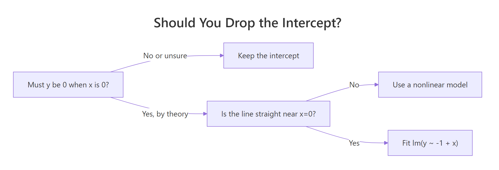

Regression Through the Origin in R: When to Force a Zero Intercept
Regression through the origin forces your linear model to pass through (0, 0) by dropping the intercept term. In R, you do it by writing lm(y ~ -1 + x) or lm(y ~ 0 + x). It is a tempting shortcut when theory says y must be zero at x = 0, but it changes how you should read almost every number summary() prints.
What does regression through the origin look like in R?
A standard lm() call fits two numbers, an intercept and a slope. A regression through the origin fits only the slope and assumes the line must pass through zero. Here is the one-character change that flips mtcars from "predict mpg from weight, with a non-zero baseline" to "predict mpg from weight, with no baseline at all":
Look at that slope carefully. It is positive, 5.29 miles per gallon for every extra 1,000 lbs of car. Every car enthusiast knows heavier cars get worse mileage, not better. The standard model on the same data gives a slope of -5.34, with the expected sign. By forcing the line through (0, 0) we lost the freedom to set a sensible baseline, and the slope twisted to compensate. That is the warning shot: a no-intercept model can hand you a correct-looking number that is pointing the wrong way.
Try it: Fit a no-intercept model on iris for Sepal.Length ~ Petal.Length and print the slope.
Click to reveal solution
Explanation: The -1 drops the intercept. The slope now absorbs whatever vertical offset the full model would have used, so it rarely matches the full-model slope.
How do you drop the intercept in R?
R gives you two equivalent syntaxes. -1 says "remove the intercept term." 0 + says "start the formula with zero, then add predictors." Both produce the same model.
Both coefficients match to six digits because they are fitting the same ordinary-least-squares problem. Pick whichever reads best in your formula.
0 + in long formulas. When you have many predictors, lm(y ~ 0 + x1 + x2 + x3 + x4) makes the "no intercept" choice obvious from the left. -1 at the start or buried mid-formula is easier to miss during code review.Multiple predictors work the same way. You are still fitting a single hyperplane that passes through the origin, with one slope per predictor:
With the intercept dropped, both slopes must explain all of mpg starting from zero. The wt coefficient bloats from 5.29 (single-predictor, no-intercept) to 6.81, and hp gets a small negative slope to pull predictions back down. The individual numbers stop lining up with the one-variable-at-a-time intuition you may carry from the full model.
Try it: Using the 0 + syntax, fit mpg ~ cyl + disp on mtcars without an intercept.
Click to reveal solution
Explanation: Both predictors now share the job of explaining mpg without any constant term. The cyl coefficient is large because it absorbs what the full model's intercept would have captured.
When does forcing a zero intercept actually make sense?
The honest answer: less often than you think. There are a few clean cases where it genuinely fits:
- Calibration curves in analytical chemistry, where absorbance is physically zero at concentration zero (blank reading subtracted).
- Ratio-scale physical relationships: distance = speed × time when time is measured from a stop, voltage = current × resistance, mass = density × volume.
- Comparison of two measurement devices when both report the same physical quantity on a ratio scale and you want the slope to be the conversion factor.
- Dose-response in settings where a true blank exists, and the response is defined as zero at zero dose.

Figure 1: Decide in three questions whether dropping the intercept is safe.
Here is a synthetic calibration problem where a no-intercept model is the right call. We simulate 20 standards with true slope 2.5 and genuine zero intercept, then fit both models:
The no-intercept slope lands at 2.506, essentially bang on the true value of 2.5. The full model's intercept is 0.04, statistically indistinguishable from zero given this noise, and its slope (2.491) is a hair farther from the truth. In this case dropping the intercept spends the extra degree of freedom usefully. Contrast this with mtcars where the no-intercept slope flipped sign: the difference is that here the line actually is straight down to zero.
Try it: Which of these scenarios should use regression through the origin? A, B, or both?
A. Predicting monthly grocery spend from household size. B. Predicting absorbance from concentration in a lab assay, with a blank-subtracted sensor.
Click to reveal solution
Explanation: A household of size zero is a meaningless extrapolation, and grocery spend is not known to be zero there. Scenario B has a blank-subtracted sensor where zero concentration is defined to produce zero absorbance. Only B satisfies the "line is straight down to zero" rule.
Why is R-squared misleading when you drop the intercept?
This is the trap. The R² that summary() prints for a no-intercept model is computed with a different total sum of squares than the one for a full model, and the two numbers are not comparable.
For a full model, R² is:
$$R^2 = 1 - \frac{\sum (y_i - \hat{y}_i)^2}{\sum (y_i - \bar{y})^2}$$
For a no-intercept model, R computes:
$$R^2_{\text{uncentered}} = 1 - \frac{\sum (y_i - \hat{y}_i)^2}{\sum y_i^2}$$
The denominator changed from "variation around the mean" to "squared distance from zero." The second denominator is much larger whenever your y values are far from zero, so the reported R² looks flattering even when the fit is awful.
Watch this happen on the mtcars model we fit at the top:
The reported R² of 0.72 is a siren song. Compute the same quantity with the centered baseline that every regression textbook uses, and you get −2.50. Negative. The no-intercept model is worse than just predicting every car's mpg as the dataset mean. Meanwhile, summary() keeps happily printing 0.72 as if nothing were wrong.
Try it: Compute the centered R² for lm(Petal.Length ~ -1 + Sepal.Length, data = iris) and compare it with what summary() reports.
Click to reveal solution
Explanation: Reported 0.94 sounds excellent. Centered 0.43 tells the honest story: on the textbook scale this model only explains 43% of the variation around the mean.
How do predictions compare with and without intercept?
The cleanest diagnostic is a plot. Fit both models, draw both lines, see where they disagree. On mtcars the story is immediate:
The blue line tilts downward through the cloud of points like you would expect. The red dashed line starts at the origin and slopes upward, missing the data entirely at both ends. That picture is worth more than any R² table.
Numerically, the gap between the two models grows with the distance from zero. Predicting mpg for a medium-weight car makes the point:
A 5.4 mpg gap between two models fit to the same 32 data points. The full model is close to the actual average mpg at wt = 3 (around 20). The no-intercept model is five miles per gallon low because its forced-through-origin line starts too low and climbs the wrong way.
Try it: Predict mpg at wt = 2.0 under both models and compute the difference.
Click to reveal solution
Explanation: At wt = 2, the full model predicts 26.6 mpg. The no-intercept model predicts 10.6, less than half, because its forced-zero line is climbing from the origin rather than fitting the actual data range.
Practice Exercises
Exercise 1: Fit and compare on the cars dataset
A physicist argues that a car at zero speed should take zero feet to stop, so a no-intercept model for dist ~ speed must be correct. Fit both models on the built-in cars dataset. Report the RMSE of each on the training data. Which model has lower RMSE, and do you agree with the physicist's reasoning after seeing the numbers?
Click to reveal solution
Explanation: The no-intercept model has marginally worse RMSE, which is a hint that the physicist's clean "zero at zero" story is not the whole picture. Stopping distance includes reaction-time distance that is roughly constant, so the true intercept is not exactly zero in the observed regime. The full model's negative intercept (around -17) is not physically meaningful but does compensate for a linear form that is mildly wrong near zero.
Exercise 2: Compare slope confidence intervals on simulated data
Simulate 30 points from y = 3*x + noise with x = seq(1, 10, length.out = 30) and noise of standard deviation 2. Fit both a full model and a no-intercept model. Extract the 95% confidence interval for the slope from each. Do the intervals overlap?
Click to reveal solution
Explanation: Both intervals bracket the true slope of 3. The no-intercept interval is tighter because it spends zero degrees of freedom estimating the intercept. The trade-off only pays off because the data genuinely pass through the origin. On real data where you are not sure, the narrower interval is a false comfort.
Exercise 3: Explain the R-squared gap on mtcars
Using m_ni from earlier in the tutorial, show in code that summary(m_ni)$r.squared equals 1 - sum(residuals(m_ni)^2) / sum(mtcars$mpg^2), confirming the uncentered denominator. Then write a one-sentence explanation of why the centered R² is so much lower.
Click to reveal solution
Explanation: The reported R² uses sum(y^2) in the denominator instead of sum((y - mean(y))^2). On mtcars, mpg averages around 20, so squared distances from zero are much larger than squared distances from the mean. That inflated denominator makes the fraction of "variation explained" look artificially high even though the model misses the centered target badly.
Complete Example: A spectrophotometer calibration curve
Here is the flow you would actually use in a lab. We simulate ten calibration standards where absorbance is known to be zero at zero concentration (the instrument was blank-corrected), fit a no-intercept model because the linear form is trustworthy down to the origin, and use it to estimate the concentration of an unknown sample.
Now fit the calibration line through the origin and predict an unknown sample whose absorbance came out at 1.63:
The slope of 1.821 is the molar absorptivity estimate, and its standard error is tiny because we have ten well-spaced standards. Inverting the fit gives an estimated concentration of 0.895 for the unknown sample. Because the model passes through the origin by construction, we do not have to worry about whether a small intercept estimate near zero is signal or noise. This is regression through the origin working the way it is meant to.
The line starts at (0, 0) and cuts through every point. That is what a valid regression through the origin looks like. Compare the shape of this plot with the mtcars red-dashed line earlier, which missed the data cloud entirely.
Summary
The short version: forcing your regression through the origin is a modelling decision, not a default. The table below is the shortlist of when to use it and when to leave the intercept in.
| Situation | Force zero intercept? |
|---|---|
| Calibration curve with blank-subtracted sensor | Yes |
| Physical laws: distance = rate × time, V = IR | Yes |
| Comparison of two measurements of the same ratio-scale quantity | Yes |
| Theory says intercept is zero but data never near x = 0 | No (linear form unverified near zero) |
| You want a tighter slope CI | No (borrowed certainty, not real) |
| You want a higher R² | No (different denominator, not a fair comparison) |
| You have not plotted the data | No (plot first, decide after) |
Three takeaways:
- The R syntax is simple:
lm(y ~ -1 + x)orlm(y ~ 0 + x). The decision is the hard part. summary()'s R² uses a different denominator for no-intercept models. It is not comparable across the two model types. Compute a centered R² by hand if you need to compare.- Plot both fits. A two-line overlay tells you in five seconds what a table of statistics can hide.
References
- Eisenhauer, J. G. (2003). Regression through the Origin. Teaching Statistics, 25(3), 76–80. Link
- Casella, G. (1983). Leverage and regression through the origin. The American Statistician, 37(2), 147–152. Link
- R Core Team. *
lm()documentation, including formula syntax*. Link - Fox, J. (2017). Don't force your regression through zero just because you know the true intercept has to be zero. Dynamic Ecology. Link
- SAS Communities Library. The Why, How, and Cautions of Regression Without an Intercept. Link
Continue Learning
- Linear Regression Assumptions in R, the assumption set
lm()relies on and which assumptions shift when you drop the intercept. - Regression Diagnostics in R, the residual plots that expose a misspecified no-intercept model faster than any fit statistic.
- Multicollinearity in R, another silent regression pitfall that also inflates fit statistics without flagging itself.